library(tidyverse)
library(lme4)
library(lmerTest)
library(MuMIn)
library(glmmTMB)
library(emmeans)
library(broom)
library(broom.mixed)
library(sjPlot)
library(grid)
library(gridExtra)
library(knitr)
knitr::opts_chunk$set(comment="", cache=T, warning = F, message = F, fig.path = "images_modelchecks/")
options(contrasts = c("contr.sum", "contr.poly")) #needed for Type III SS
print_anova_table <- function(df, mod) {
df %>% select(c("trait", "term", "p.value")) %>%
mutate(p.value=p.value %>% map_chr(~ format(.x,scientific=-2, digits=2 , nsmall=2)) %>%
str_replace("e-0(\\d)"," x 10^-\\1^") %>% str_replace("e-(\\d+)"," x 10^-\\1^")) %>%
pivot_wider(names_from=term, values_from=p.value) %>%
mutate(singular = map_lgl(mod, isSingular),
R2m = map_dbl(mod, ~ MuMIn::r.squaredGLMM(.x)[[1,"R2m"]])) %>%
kable
}
load("data/maxfield_data.rda")options(contrasts = c("contr.sum", "contr.poly"))
mt.mod.split.subplot <- map(set_names(traits),
~ lmer(mnps.subplot[[.x]] ~ year * snow * water + (1|plot), data=mnps.subplot))
mt.mod.split.plant <- map(set_names(traits),
~ lmer(mnps.plantyr[[.x]] ~ year * snow * water + (1|plot) + (1|plotid), data=mnps.plantyr))
mt.mod.split.subplot.coefs <- map_dfr(mt.mod.split.subplot, tidy, .id="trait")
mt.mod.split.plant.coefs <- map_dfr(mt.mod.split.plant, tidy, .id="trait")
mt.mod.split.subplot.tests <- map(mt.mod.split.subplot, anova) %>% map_dfr(tidy, .id="trait")
mt.mod.split.plant.tests <- map(mt.mod.split.plant, anova) %>% map_dfr(tidy, .id="trait")
print_anova_table(mt.mod.split.plant.tests, mt.mod.split.plant)| trait | year | snow | water | year:snow | year:water | snow:water | year:snow:water | singular | R2m |
|---|---|---|---|---|---|---|---|---|---|
| corolla_length | 3.6 x 10-19 | 0.75 | 4.5 x 10-5 | 0.99 | 0.14 | 0.72 | 0.89 | TRUE | 0.2267329 |
| style_length | 2.4 x 10-15 | 0.61 | 3.8 x 10-3 | 0.98 | 9 x 10-2 | 0.92 | 0.26 | TRUE | 0.1876339 |
| corolla_width | 3.4 x 10-26 | 0.70 | 2.1 x 10-3 | 0.56 | 0.62 | 0.43 | 0.042 | TRUE | 0.3012433 |
| sepal_width | 0.45 | 0.88 | 1 x 10-3 | 0.13 | 2.1 x 10-3 | 0.27 | 0.017 | TRUE | 0.1150963 |
| nectar_24_h_ul | 3.4 x 10-8 | 0.13 | 0.035 | 8.8 x 10-3 | 0.71 | 0.66 | 0.44 | TRUE | 0.1673997 |
| nectar_conc | 2.3 x 10-24 | 0.60 | 0.011 | 0.70 | 0.65 | 0.43 | 0.17 | FALSE | 0.3013560 |
| nectar_sugar_24_h_mg | 1.1 x 10-6 | 0.28 | 0.37 | 0.017 | 0.39 | 0.47 | 0.13 | TRUE | 0.1247425 |
| height_cm | 2.4 x 10-24 | 0.025 | 0.98 | 0.25 | 0.38 | 0.47 | 0.086 | FALSE | 0.2404936 |
| open | 1.4 x 10-39 | 0.98 | 0.69 | 0.19 | 0.63 | 0.39 | 0.11 | FALSE | 0.2588789 |
| seeds_per_fruit | 1 x 10-7 | 0.38 | 0.82 | 0.51 | 0.069 | 0.066 | 0.21 | TRUE | 0.0988047 |
| seeds_est | 4.5 x 10-5 | 0.74 | 0.63 | 5.2 x 10-4 | 0.13 | 0.41 | 0.43 | TRUE | 0.1176765 |
| fruits_nonaborted | 8.5 x 10-3 | 0.89 | 0.47 | 4.7 x 10-3 | 0.22 | 0.90 | 0.47 | TRUE | 0.0635114 |
| flowers_est | 0.68 | 0.71 | 0.44 | 8.3 x 10-3 | 0.14 | 0.71 | 0.77 | TRUE | 0.0379795 |
| prop_infested | 8.9 x 10-6 | 0.16 | 0.33 | 0.032 | 0.85 | 0.13 | 0.62 | TRUE | 0.0632523 |
| prop_aborted | 5.5 x 10-6 | 0.32 | 0.68 | 0.20 | 0.56 | 0.093 | 0.40 | TRUE | 0.0705817 |
| seeds_per_flower | 2 x 10-7 | 0.14 | 0.60 | 0.093 | 0.15 | 0.026 | 0.79 | TRUE | 0.1112349 |
mt.emm.split.plant <- map(mt.mod.split.plant, ~ summary(emmeans(ref_grid(.x), ~ year * snow * water)))mt.mod.split.coefs <- bind_rows(subplot=mt.mod.split.subplot.coefs, plant=mt.mod.split.plant.coefs, .id="unit")
mt.mod.split.coefs %>% filter(effect=="ran_pars") %>% mutate(trait = fct_relevel(trait, traits)) %>%
ggplot(aes(y=estimate, x=paste0(group," (",unit," means)"))) +
facet_wrap(vars(trait), scales="free_y") +
labs(x="Random effect (data)", y="Standard deviation", color="Data", shape="SD < 1e-4") +
geom_point(aes(color=unit, shape=estimate < 1e-4), size=3) +
geom_line(aes(group=group), color="black") +
scale_x_discrete(guide=guide_axis(angle=90)) + scale_y_continuous(limits=c(0,NA)) +
theme_bw() + theme(legend.position = "top")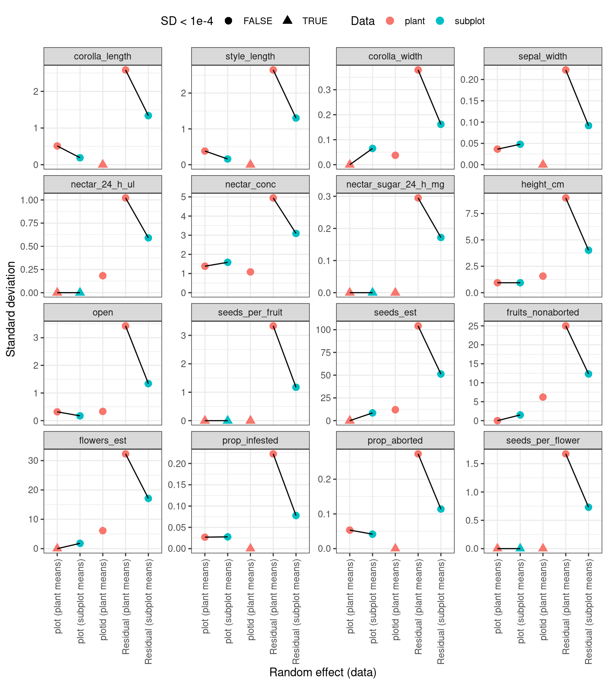
mt.mod.split.coefs %>% filter(effect=="fixed", term!="(Intercept)") %>% mutate(trait = fct_relevel(trait, traits)) %>%
ggplot(aes(y=estimate, x=paste0(term," (",unit," means)"))) +
facet_wrap(vars(trait), scales="free_y") +
labs(x="Fixed effect (data)", y="Estimate", color="Data") +
geom_point(aes(color=unit), size=2) +
geom_line(aes(group=term), color="black") +
scale_x_discrete(guide=guide_axis(angle=90)) + theme_bw() + theme(legend.position = "top")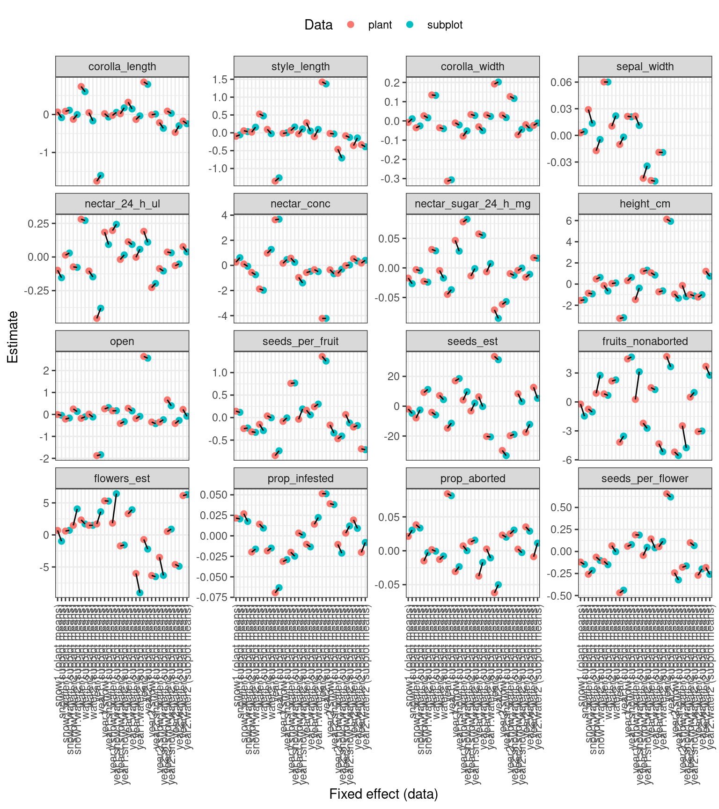
mt.mod.split.tests <- bind_rows(subplot=mt.mod.split.subplot.tests, plant=mt.mod.split.plant.tests, .id="unit")
mt.mod.split.tests %>% mutate(trait = fct_relevel(trait, traits)) %>%
ggplot(aes(y=p.value, x=paste0(term," (",unit," means)"))) +
facet_wrap(vars(trait), scales="free_y") +
labs(x="Fixed effect (data)", y="P value", color="Data") +
geom_point(aes(color=unit), size=2) +
geom_line(aes(group=term), color="black") +
scale_y_log10() + geom_hline(yintercept=0.05)+
scale_x_discrete(guide=guide_axis(angle=90)) + theme_bw() + theme(legend.position = "top")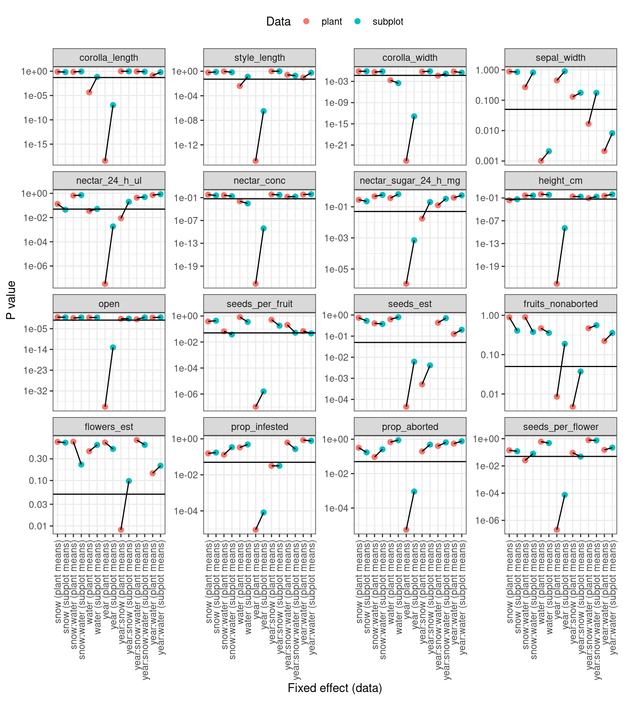
plot_diag <- function(models, trait) {
diag.plots <- sjPlot::plot_model(models[[trait]], type="diag")
traitname <- traitnames[[trait]]
if(is.null(diag.plots[[2]]$round)) {
panel <- textGrob(traitname, gp=gpar(fontsize=16))
} else {
panel <- diag.plots[[2]]$round + ggtitle("Random effect: rounds", subtitle=traitname)
}
grid.arrange(grobs=list(diag.plots[[4]], panel,
diag.plots[[2]]$plotid + ggtitle("Random effect: subplots"),
diag.plots[[2]]$plot + ggtitle("Random effect: plots"),
diag.plots[[1]], diag.plots[[3]]))
}
plot_diag(mt.mod.split.plant, "corolla_length")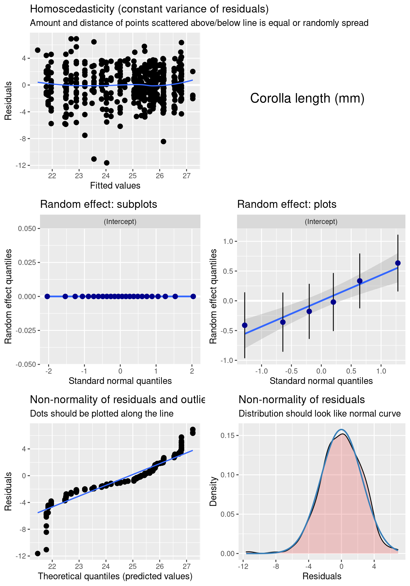
plot_diag(mt.mod.split.plant, "height_cm")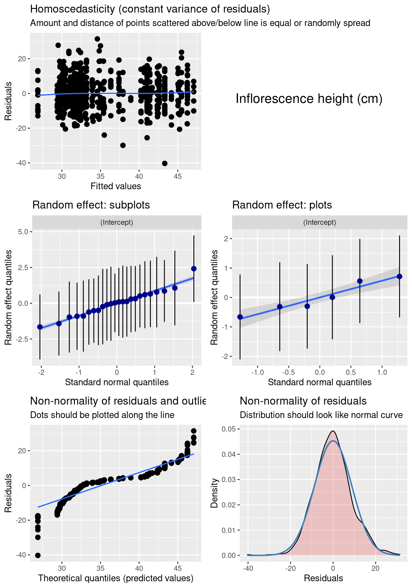
plot_diag(mt.mod.split.plant, "flowers_est")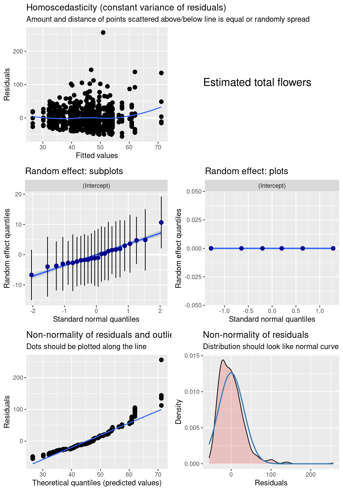
lt.subplot.r2 <- lt.subplotround %>% filter(round==2)
lt.plantyr.r2 <- lt.plantyr %>% filter(round==2)
options(contrasts = c("contr.sum", "contr.poly"))
lt.mod.split.subplot <- map(set_names(leaftraits),
~ lmer(lt.subplot.r2[[.x]] ~ year * snow * water + (1|plot), data=lt.subplot.r2))
lt.mod.split.plant <- map(set_names(leaftraits),
~ lmer(lt.plantyr.r2[[.x]] ~ year * snow * water + (1|plot) + (1|plotid), data=lt.plantyr.r2))
lt.mod.split.subplot.coefs <- map_dfr(lt.mod.split.subplot, tidy, .id="trait")
lt.mod.split.plant.coefs <- map_dfr(lt.mod.split.plant, tidy, .id="trait")
lt.mod.split.subplot.tests <- map(lt.mod.split.subplot, anova) %>% map_dfr(tidy, .id="trait")
lt.mod.split.plant.tests <- map(lt.mod.split.plant, anova) %>% map_dfr(tidy, .id="trait")
print_anova_table(lt.mod.split.plant.tests, lt.mod.split.plant)| trait | year | snow | water | year:snow | year:water | snow:water | year:snow:water | singular | R2m |
|---|---|---|---|---|---|---|---|---|---|
| sla | 2 x 10-24 | 6 x 10-3 | 0.27 | 2 x 10-2 | 0.58 | 0.48 | 0.76 | TRUE | 0.3637095 |
| trichome_density | 3.7 x 10-12 | 0.59 | 0.62 | 0.51 | 0.11 | 0.89 | 0.57 | FALSE | 0.2099443 |
| water_content | 0.092 | 2.2 x 10-5 | 0.16 | 0.024 | 1 x 10-2 | 0.66 | 0.94 | FALSE | 0.2911314 |
lt.emm.split.plant <- map(lt.mod.split.plant, ~ summary(emmeans(ref_grid(.x), ~ year * snow * water)))lt.mod.split.coefs <- bind_rows(subplot=lt.mod.split.subplot.coefs, plant=lt.mod.split.plant.coefs, .id="unit")
lt.mod.split.coefs %>% filter(effect=="ran_pars") %>% mutate(trait = fct_relevel(trait, leaftraits)) %>%
ggplot(aes(y=estimate, x=paste0(group," (",unit," means)"))) +
facet_wrap(vars(trait), scales="free_y") +
labs(x="Random effect (data)", y="Standard deviation", color="Data", shape="SD < 1e-4") +
geom_point(aes(color=unit, shape=estimate < 1e-4), size=3) +
geom_line(aes(group=group), color="black") +
scale_x_discrete(guide=guide_axis(angle=90)) + scale_y_continuous(limits=c(0,NA)) +
theme_bw() + theme(legend.position = "top")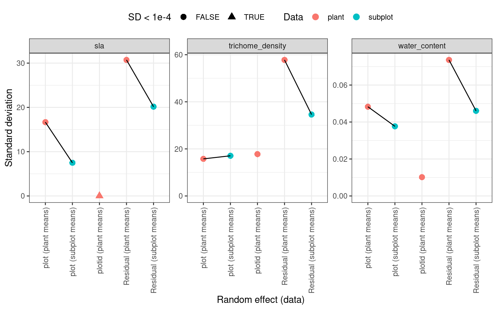
lt.mod.split.coefs %>% filter(effect=="fixed", term!="(Intercept)") %>% mutate(trait = fct_relevel(trait, leaftraits)) %>%
ggplot(aes(y=estimate, x=paste0(term," (",unit," means)"))) +
facet_wrap(vars(trait), scales="free_y") +
labs(x="Fixed effect (data)", y="Estimate", color="Data") +
geom_point(aes(color=unit), size=2) +
geom_line(aes(group=term), color="black") +
scale_x_discrete(guide=guide_axis(angle=90)) + theme_bw() + theme(legend.position = "top")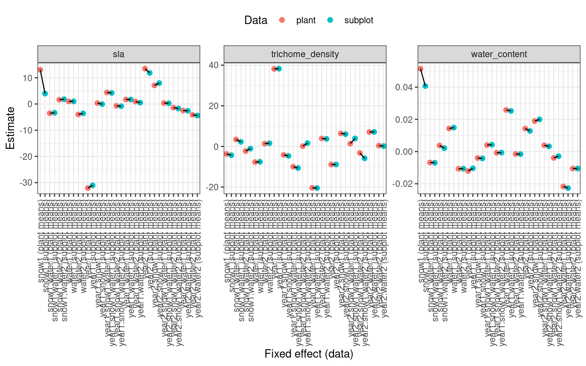
lt.mod.split.tests <- bind_rows(subplot=lt.mod.split.subplot.tests, plant=lt.mod.split.plant.tests, .id="unit")
lt.mod.split.tests %>% mutate(trait = fct_relevel(trait, leaftraits)) %>%
ggplot(aes(y=p.value, x=paste0(term," (",unit," means)"))) +
facet_wrap(vars(trait), scales="free_y") +
labs(x="Fixed effect (data)", y="P value", color="Data") +
geom_point(aes(color=unit), size=2) +
geom_line(aes(group=term), color="black") +
scale_y_log10() + geom_hline(yintercept=0.05)+
scale_x_discrete(guide=guide_axis(angle=90)) + theme_bw() + theme(legend.position = "top")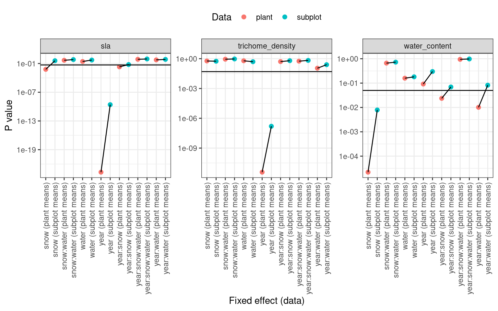
plot_diag(lt.mod.split.plant, "sla")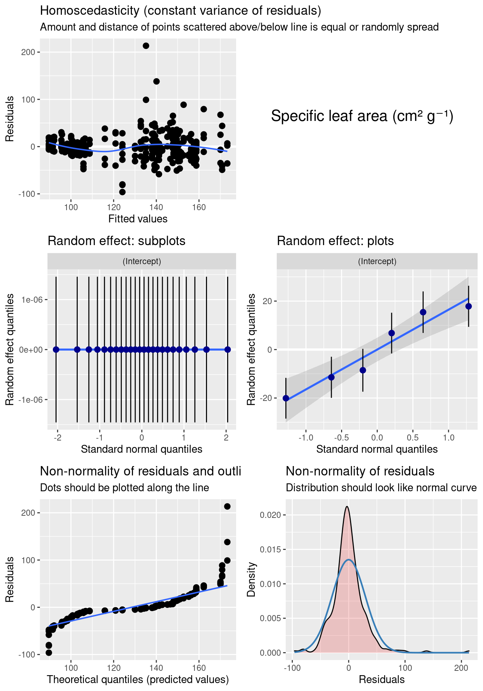
plot_diag(lt.mod.split.plant, "trichome_density")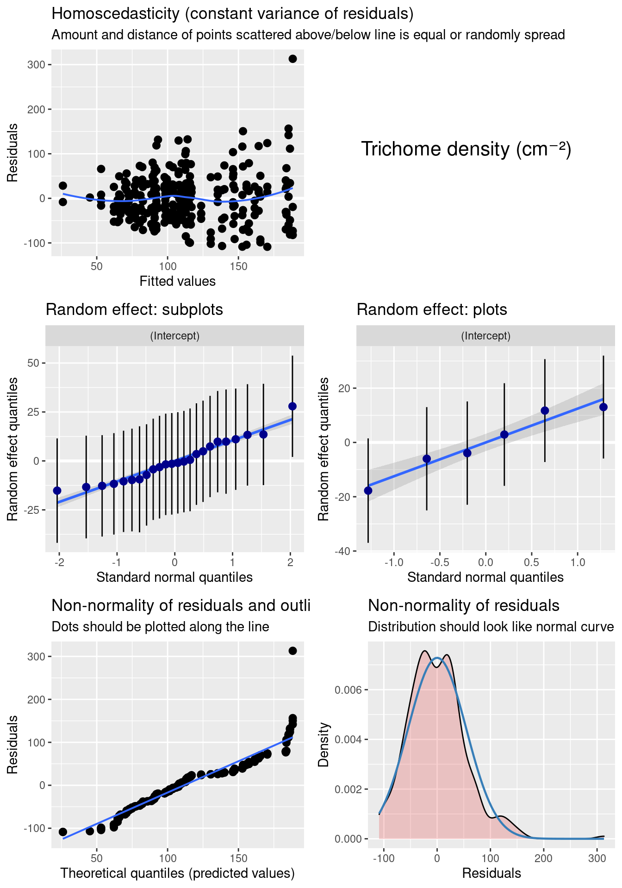
plot_diag(lt.mod.split.plant, "water_content")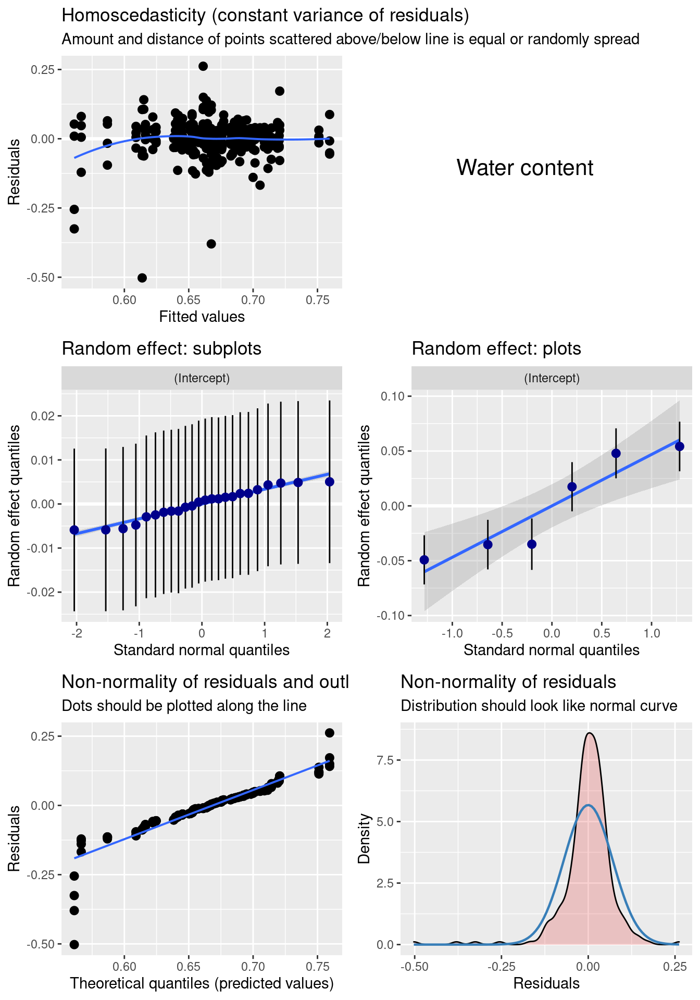
options(contrasts = c("contr.sum", "contr.poly"))
pt.mod.split.subplot <- map(set_names(phystraits),
~ lmer(pt.subplot[[.x]] ~ year * snow * water + (1|plot), data=pt.subplot))
pt.mod.split.plant <- map(set_names(phystraits),
~ lmer(pt.plantyr[[.x]] ~ year * snow * water + (1|plot) + (1|plotid) + (1|round), data=pt.plantyr))
pt.mod.split.subplot.coefs <- map_dfr(pt.mod.split.subplot, tidy, .id="trait")
pt.mod.split.plant.coefs <- map_dfr(pt.mod.split.plant, tidy, .id="trait")
pt.mod.split.subplot.tests <- map(pt.mod.split.subplot, anova) %>% map_dfr(tidy, .id="trait")
pt.mod.split.plant.tests <- map(pt.mod.split.plant, anova) %>% map_dfr(tidy, .id="trait")
print_anova_table(pt.mod.split.plant.tests, pt.mod.split.plant)| trait | year | snow | water | year:snow | year:water | snow:water | year:snow:water | singular | R2m |
|---|---|---|---|---|---|---|---|---|---|
| photosynthesis | 0.066 | 0.88 | 0.14 | 0.65 | 0.38 | 0.75 | 0.96 | TRUE | 0.1061118 |
| conductance | 6.5 x 10-4 | 0.37 | 1.6 x 10-3 | 0.49 | 1.3 x 10-3 | 0.61 | 0.64 | TRUE | 0.3509957 |
| WUE | 1.2 x 10-5 | 0.16 | 2.4 x 10-4 | 0.42 | 5.1 x 10-3 | 0.49 | 0.88 | TRUE | 0.4542653 |
pt.emm.split.plant <- map(pt.mod.split.plant, ~ summary(emmeans(ref_grid(.x), ~ year * snow * water)))pt.mod.split.coefs <- bind_rows(subplot=pt.mod.split.subplot.coefs, plant=pt.mod.split.plant.coefs, .id="unit")
pt.mod.split.coefs %>% filter(effect=="ran_pars") %>% mutate(trait = fct_relevel(trait, phystraits)) %>%
ggplot(aes(y=estimate, x=paste0(group," (",unit," means)"))) +
facet_wrap(vars(trait), scales="free_y") +
labs(x="Random effect (data)", y="Standard deviation", color="Data", shape="SD < 1e-4") +
geom_point(aes(color=unit, shape=estimate < 1e-4), size=3) +
geom_line(aes(group=group), color="black") +
scale_x_discrete(guide=guide_axis(angle=90)) + scale_y_continuous(limits=c(0,NA)) +
theme_bw() + theme(legend.position = "top")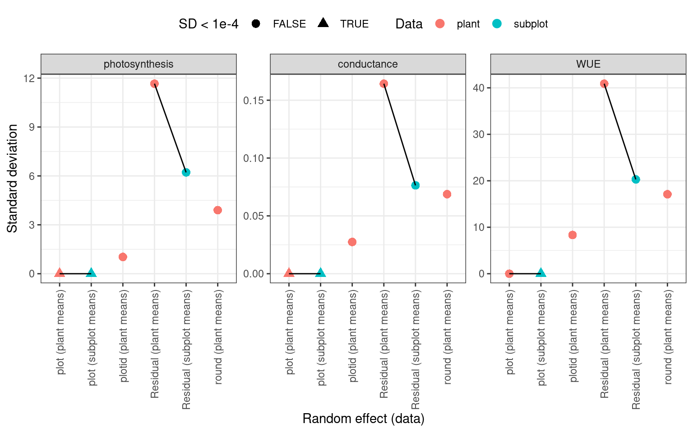
pt.mod.split.coefs %>% filter(effect=="fixed", term!="(Intercept)") %>% mutate(trait = fct_relevel(trait, phystraits)) %>%
ggplot(aes(y=estimate, x=paste0(term," (",unit," means)"))) +
facet_wrap(vars(trait), scales="free_y") +
labs(x="Fixed effect (data)", y="Estimate", color="Data") +
geom_point(aes(color=unit), size=2) +
geom_line(aes(group=term), color="black") +
scale_x_discrete(guide=guide_axis(angle=90)) + theme_bw() + theme(legend.position = "top")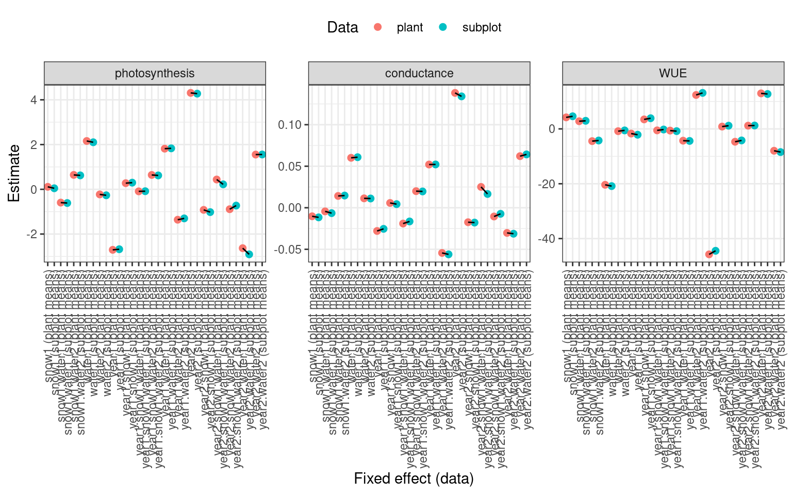
pt.mod.split.tests <- bind_rows(subplot=pt.mod.split.subplot.tests, plant=pt.mod.split.plant.tests, .id="unit")
pt.mod.split.tests %>% mutate(trait = fct_relevel(trait, phystraits)) %>%
ggplot(aes(y=p.value, x=paste0(term," (",unit," means)"))) +
facet_wrap(vars(trait), scales="free_y") +
labs(x="Fixed effect (data)", y="P value", color="Data") +
geom_point(aes(color=unit), size=2) +
geom_line(aes(group=term), color="black") +
scale_y_log10() + geom_hline(yintercept=0.05)+
scale_x_discrete(guide=guide_axis(angle=90)) + theme_bw() + theme(legend.position = "top")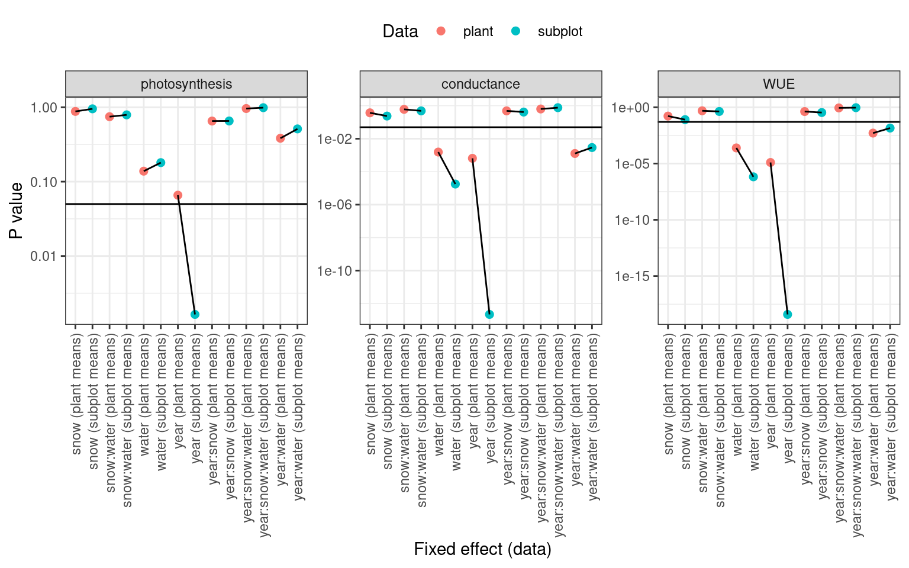
plot_diag(pt.mod.split.plant, "photosynthesis")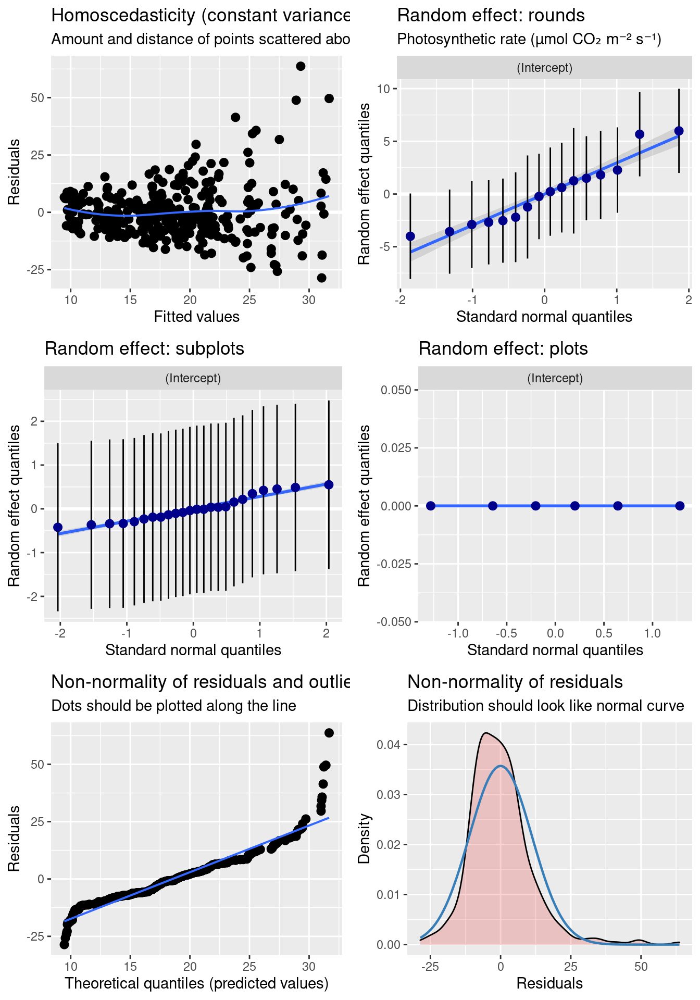
plot_diag(pt.mod.split.plant, "conductance")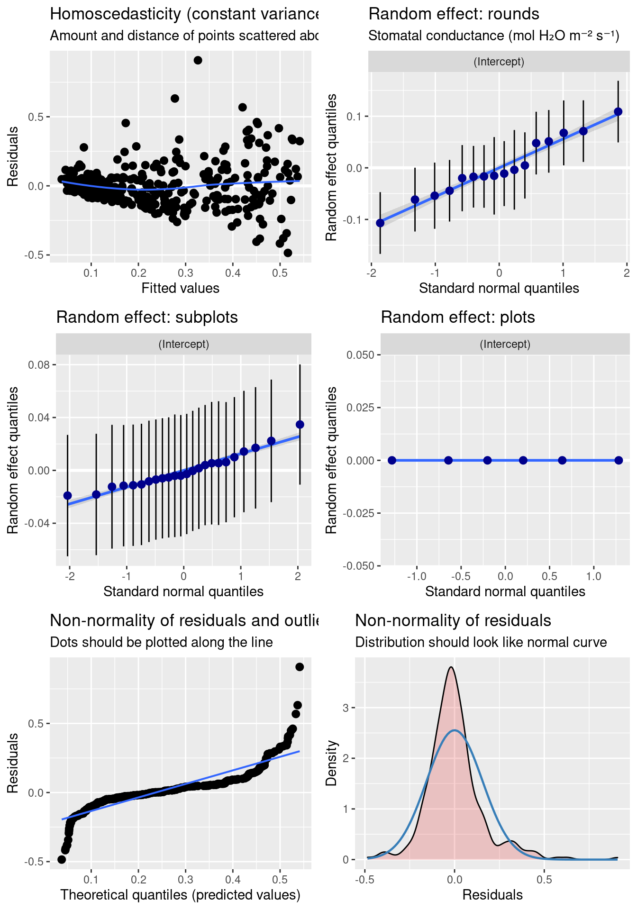
plot_diag(pt.mod.split.plant, "WUE")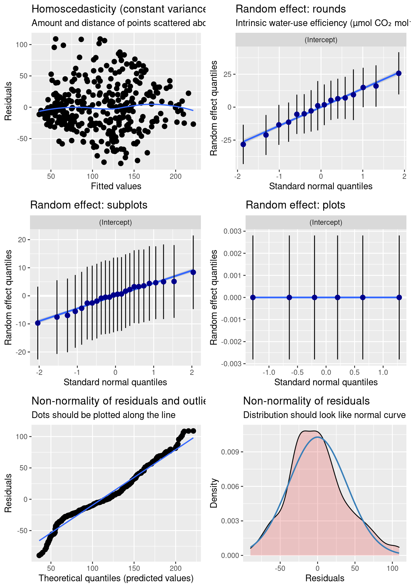
Graphs are for random effect of plot and then subplot Did this with cen.status and the random effects of plot and plotid were detected for both survival and flowering
library(glmmTMB)
options(contrasts = c("contr.sum", "contr.poly"))
pt.mod.split.surv <- glmmTMB(survived ~ year * snow * water, data=pt, family=binomial)
pt.mod.split.surv.re <- glmmTMB(survived ~ year * snow * water + (1|plot) + (1|plotid), data=pt, family=binomial)
plot_model(pt.mod.split.surv.re, type="diag")$plot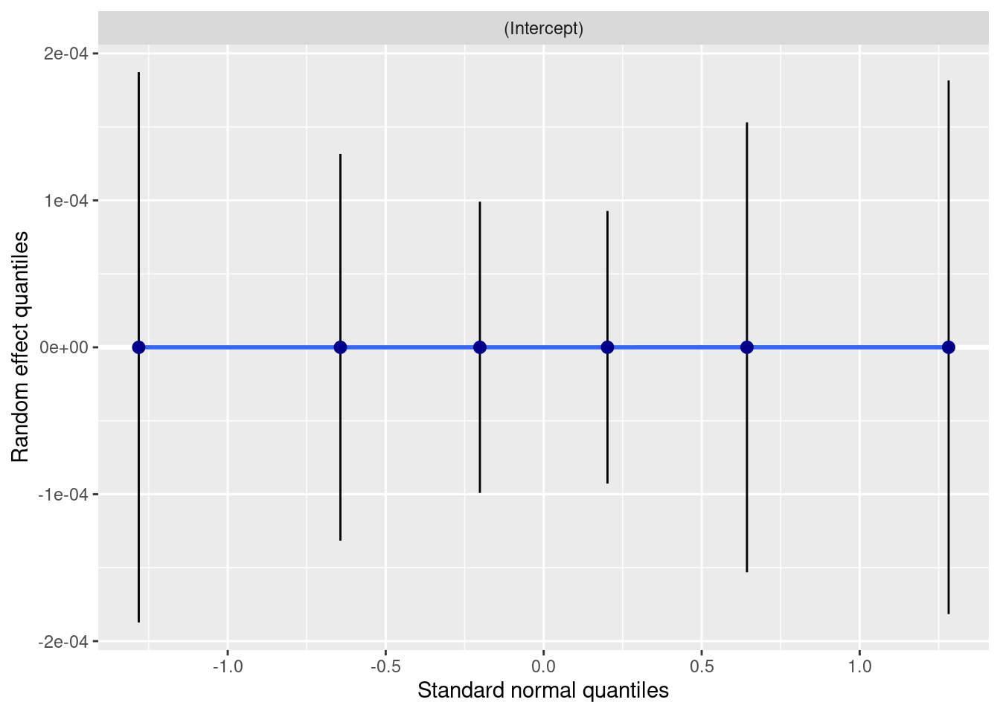
$plotid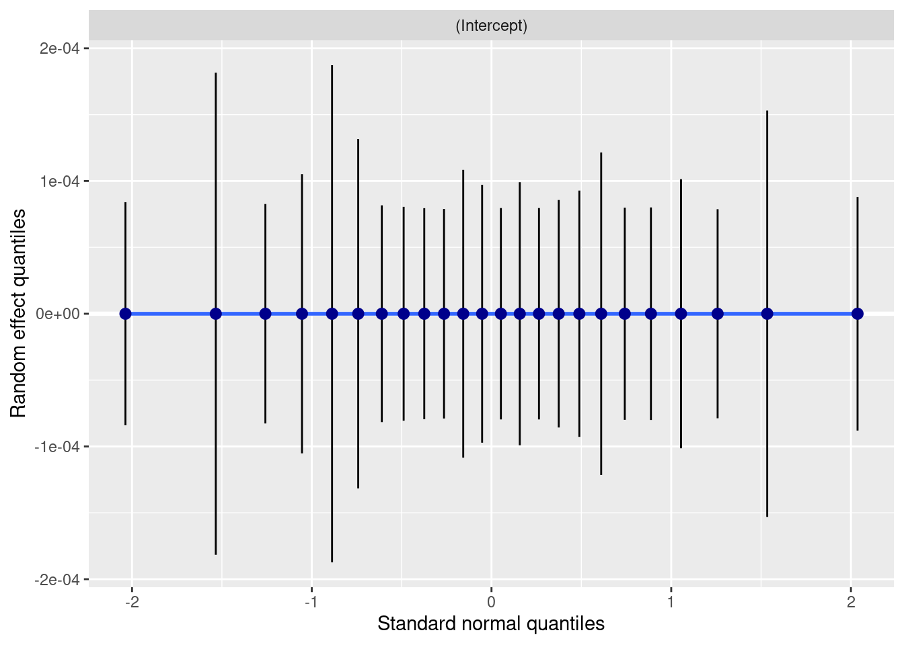
pt.mod.split.flrd <- glmmTMB(flowered ~ year * snow * water, data=pt, family=binomial)
pt.mod.split.flrd.re <- glmmTMB(flowered ~ year * snow * water + (1|plot) + (1|plotid), data=pt, family=binomial)
plot_model(pt.mod.split.flrd.re, type="diag")$plot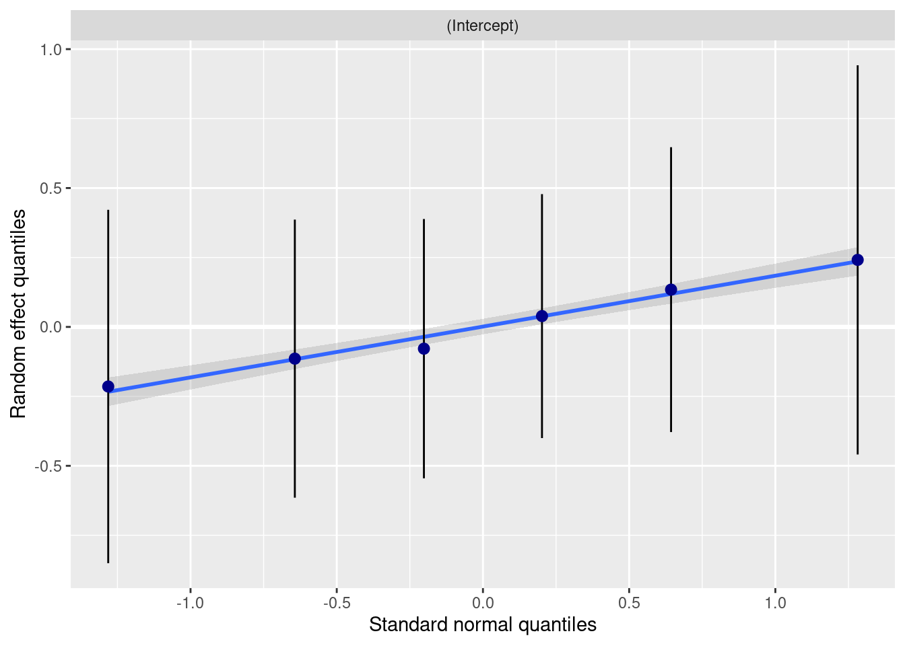
$plotid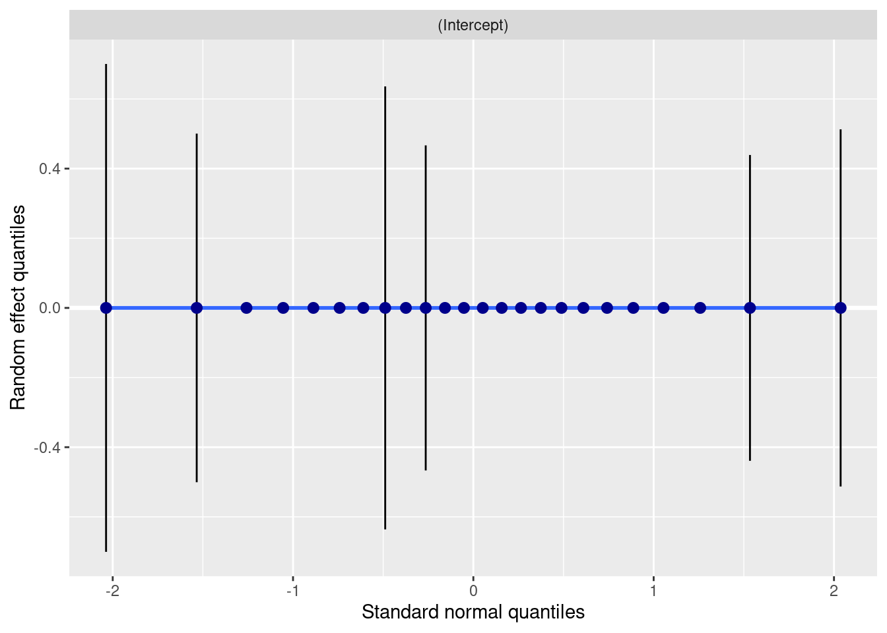